Regression comparison
Download resultsAggregation weights
\widehat y(x)=y_{\rm mean}+y_{\rm std}\sum_{h=1}^{H}\beta_h\mu_h(x)Coefficients can be negative and need not sum to one. Intervals describe coefficient uncertainty; the dashed reference is DE’s fixed 1/H weight.
BDKN


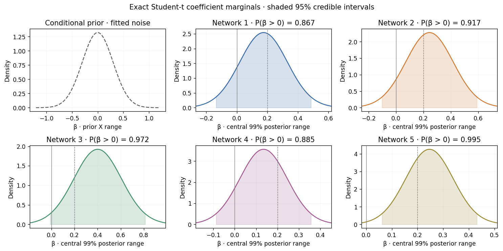

Each density panel uses its own X range for readability; coefficient intervals above share a common axis. Prior reference conditions on fitted noise. Contribution shares use held-out inputs; test targets are used only for scoring.
| Network | β mean | 95% low | 95% high | P(β > 0) | Contribution share | Test RMSE | Test NLL |
|---|---|---|---|---|---|---|---|
| 1 | 0.17517 | -0.13543 | 0.48577 | 0.86707 | 0.12754 | 0.38313 | 1.62273 |
| 2 | 0.24406 | -0.10258 | 0.59069 | 0.91723 | 0.26779 | 0.49073 | 8.75495 |
| 3 | 0.40074 | -0.00952 | 0.81101 | 0.97227 | 0.28915 | 0.31065 | 1.53182 |
| 4 | 0.13482 | -0.08680 | 0.35643 | 0.88485 | 0.09272 | 0.34041 | 1.33298 |
| 5 | 0.24661 | 0.06158 | 0.43164 | 0.99525 | 0.22280 | 0.48393 | 4.31273 |
Functional repulsion · BDKN
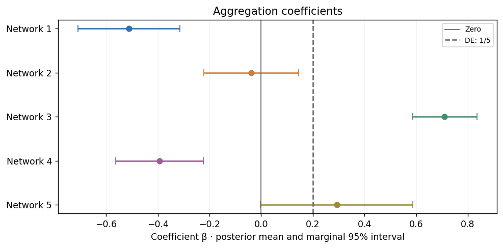
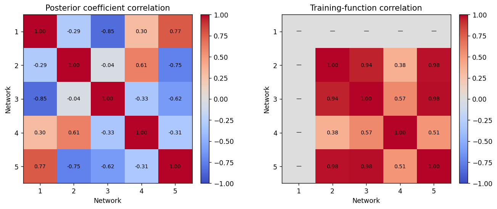
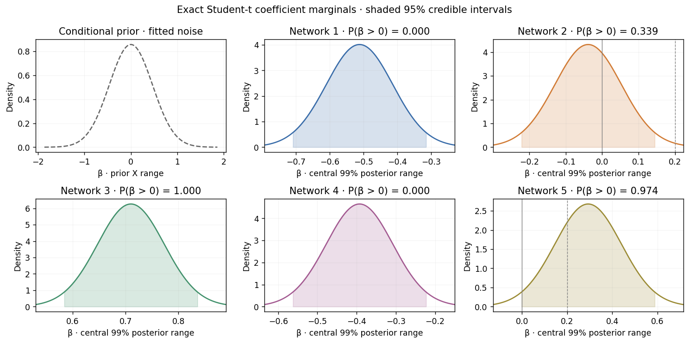
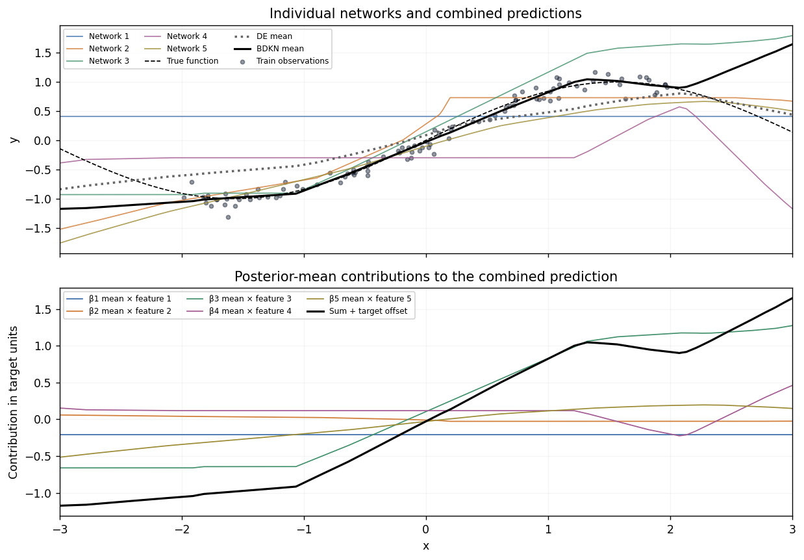
Each density panel uses its own X range for readability; coefficient intervals above share a common axis. Prior reference conditions on fitted noise. Contribution shares use held-out inputs; test targets are used only for scoring.
| Network | β mean | 95% low | 95% high | P(β > 0) | Contribution share | Test RMSE | Test NLL |
|---|---|---|---|---|---|---|---|
| 1 | -0.51152 | -0.70825 | -0.31480 | 0.00000 | 0.16109 | 0.83174 | 1.24961 |
| 2 | -0.03834 | -0.22099 | 0.14430 | 0.33896 | 0.02238 | 0.37727 | 1.12445 |
| 3 | 0.71002 | 0.58405 | 0.83599 | 1.00000 | 0.56464 | 0.57235 | 1.41773 |
| 4 | -0.39262 | -0.56232 | -0.22293 | 0.00001 | 0.09887 | 0.70815 | 1.43195 |
| 5 | 0.29273 | -0.00197 | 0.58742 | 0.97424 | 0.15302 | 0.45204 | 1.35184 |
Weight repulsion · BDKN

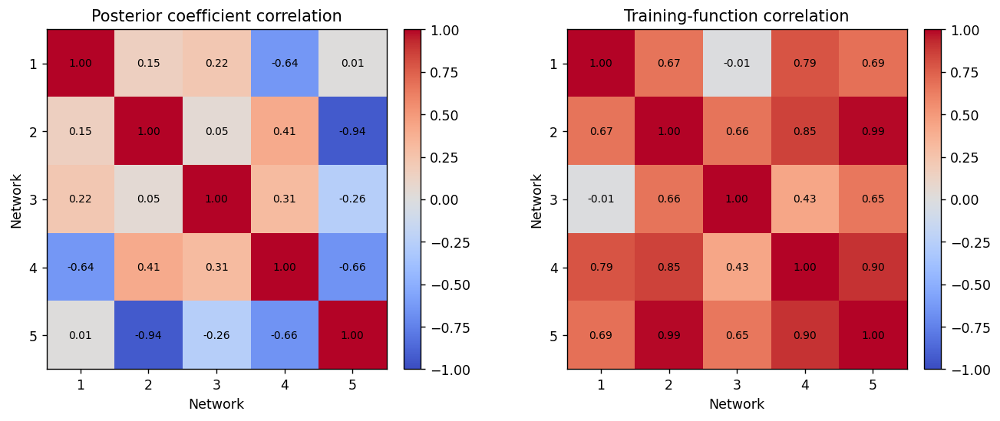
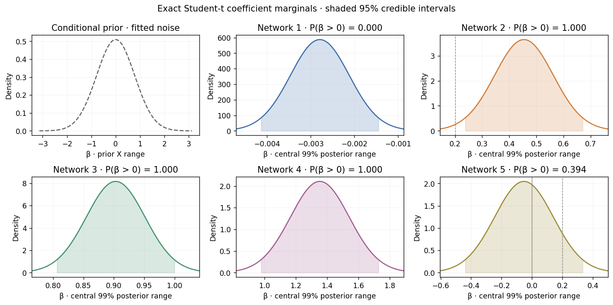

Each density panel uses its own X range for readability; coefficient intervals above share a common axis. Prior reference conditions on fitted noise. Contribution shares use held-out inputs; test targets are used only for scoring.
| Network | β mean | 95% low | 95% high | P(β > 0) | Contribution share | Test RMSE | Test NLL |
|---|---|---|---|---|---|---|---|
| 1 | -0.00279 | -0.00413 | -0.00145 | 0.00004 | 0.10495 | 53.62387 | 9.72871 |
| 2 | 0.45398 | 0.23772 | 0.67024 | 0.99997 | 0.23097 | 0.54186 | 0.51870 |
| 3 | 0.90308 | 0.80641 | 0.99975 | 1.00000 | 0.22898 | 0.63432 | 0.56944 |
| 4 | 1.35399 | 0.97921 | 1.72876 | 1.00000 | 0.41447 | 1.11701 | 1.41734 |
| 5 | -0.05251 | -0.43796 | 0.33294 | 0.39375 | 0.02063 | 0.41387 | 1.06590 |
First-order repulsion · BDKN
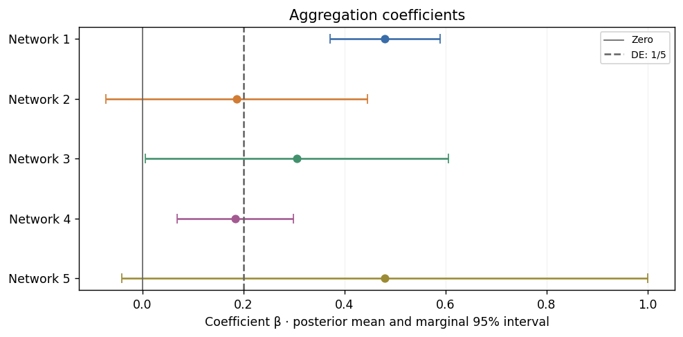
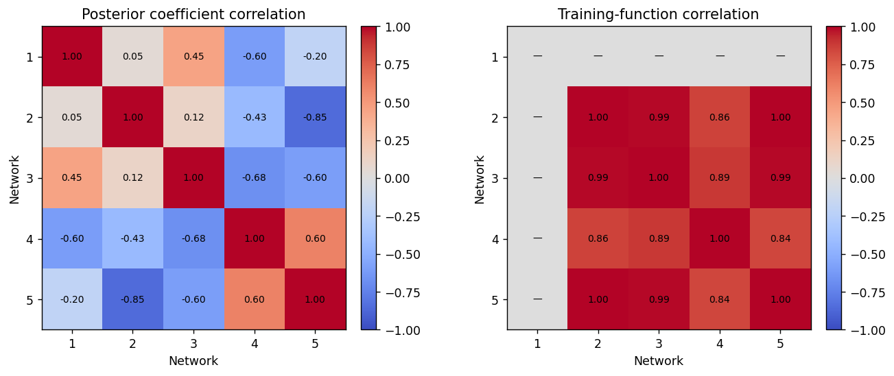
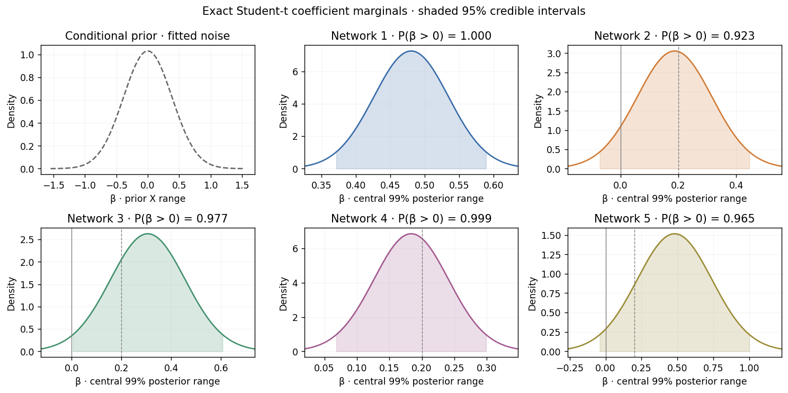
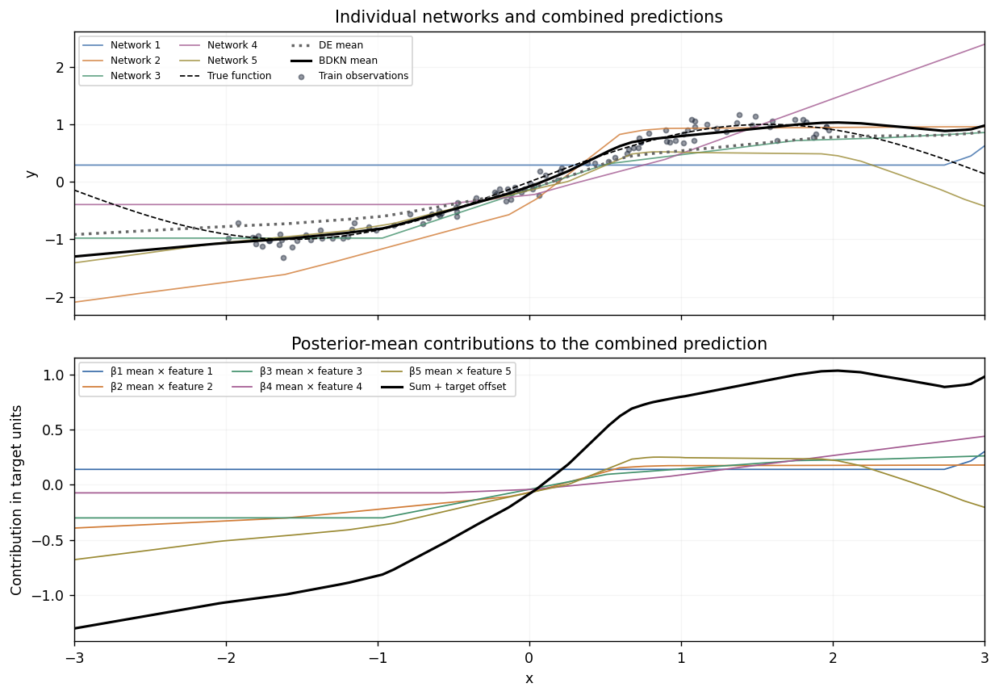
Each density panel uses its own X range for readability; coefficient intervals above share a common axis. Prior reference conditions on fitted noise. Contribution shares use held-out inputs; test targets are used only for scoring.
| Network | β mean | 95% low | 95% high | P(β > 0) | Contribution share | Test RMSE | Test NLL |
|---|---|---|---|---|---|---|---|
| 1 | 0.48043 | 0.37172 | 0.58914 | 1.00000 | 0.14517 | 0.78601 | 1.21183 |
| 2 | 0.18678 | -0.07166 | 0.44521 | 0.92263 | 0.21024 | 0.63904 | 87.79685 |
| 3 | 0.30556 | 0.00520 | 0.60591 | 0.97688 | 0.21722 | 0.29885 | 0.74313 |
| 4 | 0.18362 | 0.06847 | 0.29877 | 0.99897 | 0.13655 | 0.68346 | 1.51715 |
| 5 | 0.48022 | -0.04038 | 1.00082 | 0.96489 | 0.29082 | 0.42786 | 0.88112 |